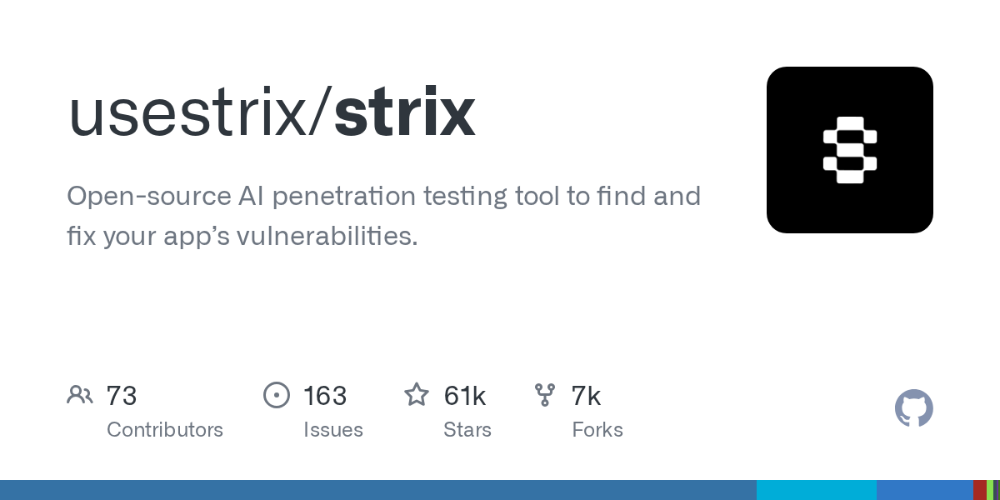
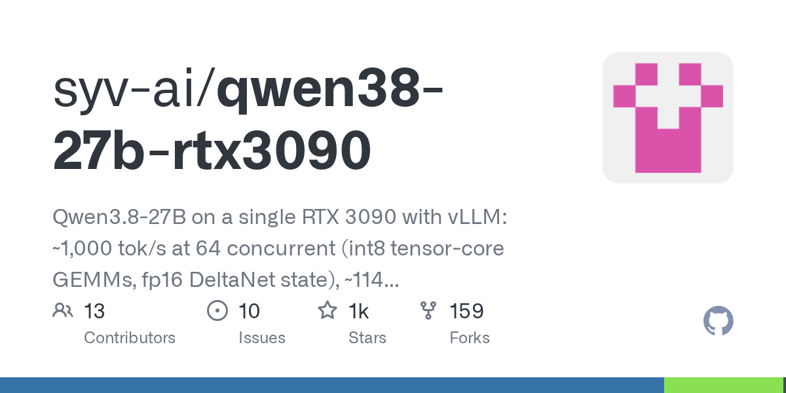

04 에이전트·툴링
코딩 에이전트의 일하는 순서를 표준화하는 ECC
“ECC는 코드를 쓰는 에이전트에 계획, 테스트, 구현, 검토, 검증, 기억, 개선 절차를 붙인다.”
Weekly GitHub Brief
이번 주에는 에이전트 도구가 ‘무엇을 할 수 있나’보다 ‘어떤 순서로 일하나’로 이동했다. 계획과 검증 절차를 붙이거나, 취약점 점검처럼 단계가 분명한 일을 CLI와 자동 리포트로 묶는 저장소가 눈에 띄었다. 인프라 쪽에서는 대형 언어모델 추론 엔진과 단일 GPU 서빙 설정이 함께 올라와, 속도와 비용을 낮추는 방향이 계속 이어졌다. 라이선스나 배포 방식보다 실무 적용성을 먼저 챙기는 흐름이 강했고, 보안 점검도 코드와 앱을 따로 보지 않고 배포 전 단계에 붙여 쓰는 쪽으로 모였다. 사내에서는 먼저 작은 모델을 한 장의 GPU나 기존 서버에서 서빙해 보며, 응답 속도와 운영 비용을 함께 확인해 보는 편이 좋다.

Editor's Pick
04 에이전트·툴링
“ECC는 코드를 쓰는 에이전트에 계획, 테스트, 구현, 검토, 검증, 기억, 개선 절차를 붙인다.”
07 인프라·런타임
“vLLM은 처리량과 메모리 효율을 앞세운다. 핵심 기법으로 PagedAttention, 연속 배칭, chunked prefill, prefix caching을 쓴…”
08 인프라·런타임
“이 저장소는 한 장의 RTX 3090에서 어느 정도 성능이 나오는지 수치를 자세히 적었다. 동시 요청 64건에서는 약 1,000 tok/s를 적었다.”
이번 주 가장 뜨거웠던 저장소 하나를 골랐습니다. 아래 섹션에도 그대로 실려 있습니다.
shanraisshan/claude-code-best-practice
Claude Code를 팀 업무에 맞게 쓰는 법을 모은 참고 저장소다.
“이 저장소는 설치형 도구보다 참고서에 가깝다. Claude를 챗봇처럼만 쓰지 말고 agent, command, skill, hook을 조합하라고 안내한다. /weather-orchestrator 예제로 전체 흐름을 보여준다.”
★ 65,665HTMLMIT 사내 사용 가능최근 활동 09.06

지난 7일 동안 스타가 빠르게 늘었거나 새로 등장해 주목받는 저장소입니다.
이번 주는 기준을 넘는 급상승 저장소가 없었습니다.
이번 주 안에 정식 릴리스를 낸 프로젝트의 의미 있는 버전 변화입니다.
Fincept-Corporation/FinceptTerminal
시장 분석, 투자 리서치, 경제 데이터 도구를 한곳에 모은 금융 애플리케이션이다.
“기업용 비공개판과 별도로, 이 저장소는 학습·학술용 공개판을 제공한다. 공개판은 월 1회 릴리스를 내고, Windows·Linux·macOS용 설치 파일을 따로 배포한다.”
★ 31,087C++미표기 확인 필요릴리스 v4.5.0 (09.01)최근 활동 09.01

ZhuLinsen/daily_stock_analysis
여러 시장의 주가·뉴스를 모아 AI 분석 보고서와 대시보드를 만들고 메신저나 이메일로 보내는 시스템이다.
“기본 무료 데이터원은 설정 없이 돌릴 수 있다. 다만 상위 서비스의 호출 제한과 인터페이스 변경, 네트워크 변동 영향을 받아 안정성은 보장하지 않는다. 장기 정시 실행이나 대량 분석에는 토큰형 데이터원을 권한다.”
★ 64,693PythonMIT 사내 사용 가능릴리스 v3.32.0 (09.06)최근 활동 09.06테스트AGENTS.md

usestrix/strix
웹앱, API, 코드 저장소를 대상으로 AI 에이전트가 실제 공격 절차를 따라 취약점을 찾고 검증하는 도구다.
“이 도구는 정적 분석만 하는 스캐너와 달리, 코드를 실제로 실행하고 취약점을 PoC로 검증하는 점을 앞세운다. 웹앱, GitHub 저장소, API 명세를 같은 CLI에서 다룰 수 있는 것도 차이다. 코딩 에이전트와의 연결도 열어 두었다.”
★ 60,849PythonApache-2.0 사내 사용 가능릴리스 v1.6.2 (09.05)최근 활동 09.05테스트AGENTS.md

에이전트 프레임워크, MCP 서버, 코딩 보조, LLM 앱 개발 도구입니다.
affaan-m/ECC
Claude Code, Codex 같은 코딩 에이전트에 계획·테스트·리뷰·기억 체계를 붙이는 오픈소스 도구다.
“ECC는 코드를 쓰는 에이전트에 계획, 테스트, 구현, 검토, 검증, 기억, 개선 절차를 붙인다. 매번 프롬프트로 작업 방식을 다시 적는 대신, 한 번 설치해 에이전트의 기본 습관으로 만드는 접근이다.”
★ 250,556JavaScriptMIT 사내 사용 가능릴리스 v2.2.0 (08.28)최근 활동 09.05테스트예제AGENTS.md

openai/codex-security
코드의 보안 취약점을 찾고, 검증하고, 수정까지 돕는 CLI와 TypeScript SDK다.
“이 도구는 단순 스캔 결과 출력에서 멈추지 않는다. 완료한 점검 결과를 findings service로 올리면 저장소별 이력과 중복 후보를 관리할 수 있다. 읽기 전용 대시보드는 5초마다 새로고침되며, 각 취약점은 SQLite에 저장된다.”
★ 10,492TypeScriptApache-2.0 사내 사용 가능릴리스 npm-v0.1.25 (09.02)최근 활동 09.06예제AGENTS.md
shanraisshan/claude-code-best-practice
Claude Code를 팀 업무에 맞게 쓰는 법을 모은 참고 저장소다.
“이 저장소는 설치형 도구보다 참고서에 가깝다. Claude를 챗봇처럼만 쓰지 말고 agent, command, skill, hook을 조합하라고 안내한다. /weather-orchestrator 예제로 전체 흐름을 보여준다.”
★ 65,665HTMLMIT 사내 사용 가능최근 활동 09.06
추론 서빙, 런타임, 양자화, GPU 커널, 벡터 DB 등 모델을 돌리는 바탕입니다.
vllm-project/vllm
대형 언어모델을 빠르게 추론하고 서비스하는 오픈소스 엔진이다.
“vLLM은 처리량과 메모리 효율을 앞세운다. 핵심 기법으로 PagedAttention, 연속 배칭, chunked prefill, prefix caching을 쓴다. 양자화는 FP8, INT8, INT4, GPTQ, AWQ, GGUF 등 여러 방식을 지원한다.”
★ 91,072PythonApache-2.0 사내 사용 가능릴리스 v0.28.0 (08.26)최근 활동 09.06테스트예제AGENTS.md

syv-ai/qwen38-27b-rtx3090
RTX 3090 한 장에서 Qwen3.
“이 저장소는 한 장의 RTX 3090에서 어느 정도 성능이 나오는지 수치를 자세히 적었다. 동시 요청 64건에서는 약 1,000 tok/s를 적었다. 단일 사용자에서는 기본 샘플링 기준 약 114 tok/s, greedy 기준 약 124 tok/s를 적었다.”
★ 1,162PythonApache-2.0 사내 사용 가능최근 활동 09.04
